work5 では「2. terraform import block を使用する」を検証します。
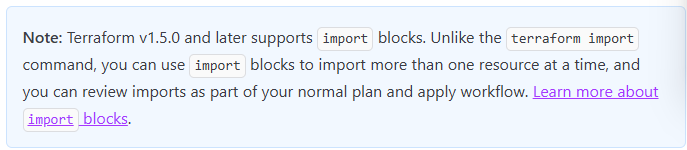
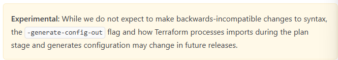
import {} で複数リソースを定義しておきコマンド実行する。
import {
to = aws_instance.example
id = "i-abcd1234"
}
resource "aws_instance" "example" {
name = "hashi"
# (other resource arguments...)
}
terraform plan -generate-config-out="import.tf"
参考URL
importblock-main.tf にリソース分の import ブロックを用意する
# Resource Group
import {
id = "/subscriptions/xxxxxxxx-xxxx-xxxx-xxxx-xxxxxxxxxxxx/resourceGroups/rg-win-vm-iis-llama"
to = azurerm_resource_group.rg
}
# VNet
import {
id = "/subscriptions/xxxxxxxx-xxxx-xxxx-xxxx-xxxxxxxxxxxx/resourceGroups/rg-win-vm-iis-llama/providers/Microsoft.Network/virtualNetworks/win-vm-iis-llama-vnet"
to = azurerm_virtual_network.terraform_work5_network
}
# Public IP
import {
id = "/subscriptions/xxxxxxxx-xxxx-xxxx-xxxx-xxxxxxxxxxxx/resourceGroups/rg-win-vm-iis-llama/providers/Microsoft.Network/publicIPAddresses/win-vm-iis-llama-public-ip"
to = azurerm_public_ip.terraform_work5_public_ip
}
# NSG
import {
id = "/subscriptions/xxxxxxxx-xxxx-xxxx-xxxx-xxxxxxxxxxxx/resourceGroups/rg-win-vm-iis-llama/providers/Microsoft.Network/networkSecurityGroups/win-vm-iis-llama-nsg"
to = azurerm_network_security_group.terraform_work5_nsg
}
# NIC
import {
id = "/subscriptions/xxxxxxxx-xxxx-xxxx-xxxx-xxxxxxxxxxxx/resourceGroups/rg-win-vm-iis-llama/providers/Microsoft.Network/networkInterfaces/win-vm-iis-llama-nic"
to = azurerm_network_interface.terraform_work5_nic
}
# VM
import {
id = "/subscriptions/xxxxxxxx-xxxx-xxxx-xxxx-xxxxxxxxxxxx/resourceGroups/rg-win-vm-iis-llama/providers/Microsoft.Compute/virtualMachines/win-vm-iis-vm"
to = azurerm_windows_virtual_machine.main
}
# Storage Account
import {
id = "/subscriptions/xxxxxxxx-xxxx-xxxx-xxxx-xxxxxxxxxxxx/resourceGroups/rg-win-vm-iis-llama/providers/Microsoft.Storage/storageAccounts/diag3abb2f58b75025ad"
to = azurerm_storage_account.terraform_work5_storage_account
}
# VM Extension
import {
id = "/subscriptions/xxxxxxxx-xxxx-xxxx-xxxx-xxxxxxxxxxxx/resourceGroups/rg-win-vm-iis-llama/providers/Microsoft.Compute/virtualMachines/win-vm-iis-vm/extensions/win-vm-iis-llama-wsi"
to = azurerm_virtual_machine_extension.web_server_install
}
# Subnet
import {
id = "/subscriptions/xxxxxxxx-xxxx-xxxx-xxxx-xxxxxxxxxxxx/resourceGroups/rg-win-vm-iis-llama/providers/Microsoft.Network/virtualNetworks/win-vm-iis-llama-vnet/subnets/win-vm-iis-llama-subnet"
to = azurerm_subnet.terraform_work3_subnet
}
# OS Disk は不要
#import {
# id = "/subscriptions/xxxxxxxx-xxxx-xxxx-xxxx-xxxxxxxxxxxx/resourceGroups/RG-WIN-VM-IIS-LLAMA/providers/Microsoft.Compute/disks/myOsDisk"
# to = azurerm_managed_disk.myOsDisk
#}
コマンドを実行する
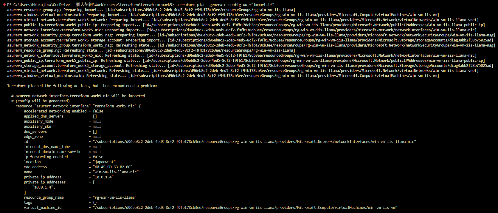
PS C:\Users\HNakajima\OneDrive - 個人契約\Work\source\terraform\terraform-work5> terraform plan -generate-config-out="import.tf"
azurerm_storage_account.terraform_work5_storage_account: Preparing import... [id=/subscriptions/xxxxxxxx-xxxx-xxxx-xxxx-xxxxxxxxxxxx/resourceGroups/rg-win-vm-iis-llama/providers/Microsoft.Storage/storageAccounts/diag3abb2f58b75025ad]
azurerm_resource_group.rg: Preparing import... [id=/subscriptions/xxxxxxxx-xxxx-xxxx-xxxx-xxxxxxxxxxxx/resourceGroups/rg-win-vm-iis-llama]
azurerm_subnet.terraform_work3_subnet: Preparing import... [id=/subscriptions/xxxxxxxx-xxxx-xxxx-xxxx-xxxxxxxxxxxx/resourceGroups/rg-win-vm-iis-llama/providers/Microsoft.Network/virtualNetworks/win-vm-iis-llama-vnet/subnets/win-vm-iis-llama-subnet]
azurerm_public_ip.terraform_work5_public_ip: Preparing import... [id=/subscriptions/xxxxxxxx-xxxx-xxxx-xxxx-xxxxxxxxxxxx/resourceGroups/rg-win-vm-iis-llama/providers/Microsoft.Network/publicIPAddresses/win-vm-iis-llama-public-ip]
azurerm_network_interface.terraform_work5_nic: Preparing import... [id=/subscriptions/xxxxxxxx-xxxx-xxxx-xxxx-xxxxxxxxxxxx/resourceGroups/rg-win-vm-iis-llama/providers/Microsoft.Network/networkInterfaces/win-vm-iis-llama-nic]
azurerm_virtual_machine_extension.web_server_install: Preparing import... [id=/subscriptions/xxxxxxxx-xxxx-xxxx-xxxx-xxxxxxxxxxxx/resourceGroups/rg-win-vm-iis-llama/providers/Microsoft.Compute/virtualMachines/win-vm-iis-vm/extensions/win-vm-iis-llama-wsi]
azurerm_virtual_network.terraform_work5_network: Preparing import... [id=/subscriptions/xxxxxxxx-xxxx-xxxx-xxxx-xxxxxxxxxxxx/resourceGroups/rg-win-vm-iis-llama/providers/Microsoft.Network/virtualNetworks/win-vm-iis-llama-vnet]
azurerm_windows_virtual_machine.main: Preparing import... [id=/subscriptions/xxxxxxxx-xxxx-xxxx-xxxx-xxxxxxxxxxxx/resourceGroups/rg-win-vm-iis-llama/providers/Microsoft.Compute/virtualMachines/win-vm-iis-vm]
azurerm_network_security_group.terraform_work5_nsg: Preparing import... [id=/subscriptions/xxxxxxxx-xxxx-xxxx-xxxx-xxxxxxxxxxxx/resourceGroups/rg-win-vm-iis-llama/providers/Microsoft.Network/networkSecurityGroups/win-vm-iis-llama-nsg]
azurerm_virtual_network.terraform_work5_network: Refreshing state... [id=/subscriptions/xxxxxxxx-xxxx-xxxx-xxxx-xxxxxxxxxxxx/resourceGroups/rg-win-vm-iis-llama/providers/Microsoft.Network/virtualNetworks/win-vm-iis-llama-vnet]
azurerm_public_ip.terraform_work5_public_ip: Refreshing state... [id=/subscriptions/xxxxxxxx-xxxx-xxxx-xxxx-xxxxxxxxxxxx/resourceGroups/rg-win-vm-iis-llama/providers/Microsoft.Network/publicIPAddresses/win-vm-iis-llama-public-ip]
azurerm_virtual_machine_extension.web_server_install: Refreshing state... [id=/subscriptions/xxxxxxxx-xxxx-xxxx-xxxx-xxxxxxxxxxxx/resourceGroups/rg-win-vm-iis-llama/providers/Microsoft.Compute/virtualMachines/win-vm-iis-vm/extensions/win-vm-iis-llama-wsi]
azurerm_subnet.terraform_work3_subnet: Refreshing state... [id=/subscriptions/xxxxxxxx-xxxx-xxxx-xxxx-xxxxxxxxxxxx/resourceGroups/rg-win-vm-iis-llama/providers/Microsoft.Network/virtualNetworks/win-vm-iis-llama-vnet/subnets/win-vm-iis-llama-subnet]
azurerm_network_security_group.terraform_work5_nsg: Refreshing state... [id=/subscriptions/xxxxxxxx-xxxx-xxxx-xxxx-xxxxxxxxxxxx/resourceGroups/rg-win-vm-iis-llama/providers/Microsoft.Network/networkSecurityGroups/win-vm-iis-llama-nsg]
azurerm_network_interface.terraform_work5_nic: Refreshing state... [id=/subscriptions/xxxxxxxx-xxxx-xxxx-xxxx-xxxxxxxxxxxx/resourceGroups/rg-win-vm-iis-llama/providers/Microsoft.Network/networkInterfaces/win-vm-iis-llama-nic]
azurerm_resource_group.rg: Refreshing state... [id=/subscriptions/xxxxxxxx-xxxx-xxxx-xxxx-xxxxxxxxxxxx/resourceGroups/rg-win-vm-iis-llama]
azurerm_storage_account.terraform_work5_storage_account: Refreshing state... [id=/subscriptions/xxxxxxxx-xxxx-xxxx-xxxx-xxxxxxxxxxxx/resourceGroups/rg-win-vm-iis-llama/providers/Microsoft.Storage/storageAccounts/diag3abb2f58b75025ad]
azurerm_windows_virtual_machine.main: Refreshing state... [id=/subscriptions/xxxxxxxx-xxxx-xxxx-xxxx-xxxxxxxxxxxx/resourceGroups/rg-win-vm-iis-llama/providers/Microsoft.Compute/virtualMachines/win-vm-iis-vm]
Terraform planned the following actions, but then encountered a problem:
# azurerm_network_interface.terraform_work5_nic will be imported
# (config will be generated)
resource "azurerm_network_interface" "terraform_work5_nic" {
accelerated_networking_enabled = false
applied_dns_servers = []
auxiliary_mode = null
auxiliary_sku = null
dns_servers = []
edge_zone = null
id = "/subscriptions/xxxxxxxx-xxxx-xxxx-xxxx-xxxxxxxxxxxx/resourceGroups/rg-win-vm-iis-llama/providers/Microsoft.Network/networkInterfaces/win-vm-iis-llama-nic"
internal_dns_name_label = null
internal_domain_name_suffix = null
ip_forwarding_enabled = false
location = "japanwest"
mac_address = "60-45-BD-53-B2-0C"
name = "win-vm-iis-llama-nic"
private_ip_address = "10.0.1.4"
private_ip_addresses = [
"10.0.1.4",
]
resource_group_name = "rg-win-vm-iis-llama"
tags = {}
virtual_machine_id = "/subscriptions/xxxxxxxx-xxxx-xxxx-xxxx-xxxxxxxxxxxx/resourceGroups/rg-win-vm-iis-llama/providers/Microsoft.Compute/virtualMachines/win-vm-iis-vm"
ip_configuration {
gateway_load_balancer_frontend_ip_configuration_id = null
name = "terraform_work3_nic_configuration"
primary = true
private_ip_address = "10.0.1.4"
private_ip_address_allocation = "Dynamic"
private_ip_address_version = "IPv4"
public_ip_address_id = "/subscriptions/xxxxxxxx-xxxx-xxxx-xxxx-xxxxxxxxxxxx/resourceGroups/rg-win-vm-iis-llama/providers/Microsoft.Network/publicIPAddresses/win-vm-iis-llama-public-ip"
subnet_id = "/subscriptions/xxxxxxxx-xxxx-xxxx-xxxx-xxxxxxxxxxxx/resourceGroups/rg-win-vm-iis-llama/providers/Microsoft.Network/virtualNetworks/win-vm-iis-llama-vnet/subnets/win-vm-iis-llama-subnet"
}
}
# azurerm_network_security_group.terraform_work5_nsg will be imported
# (config will be generated)
resource "azurerm_network_security_group" "terraform_work5_nsg" {
id = "/subscriptions/xxxxxxxx-xxxx-xxxx-xxxx-xxxxxxxxxxxx/resourceGroups/rg-win-vm-iis-llama/providers/Microsoft.Network/networkSecurityGroups/win-vm-iis-llama-nsg"
location = "japanwest"
name = "win-vm-iis-llama-nsg"
resource_group_name = "rg-win-vm-iis-llama"
security_rule = [
{
access = "Allow"
description = null
destination_address_prefix = "*"
destination_address_prefixes = []
destination_application_security_group_ids = []
destination_port_range = "3389"
destination_port_ranges = []
direction = "Inbound"
name = "RDP"
priority = 1000
protocol = "*"
source_address_prefix = "120.75.97.239"
source_address_prefixes = []
source_application_security_group_ids = []
source_port_range = "*"
source_port_ranges = []
},
{
access = "Allow"
description = null
destination_address_prefix = "*"
destination_address_prefixes = []
destination_application_security_group_ids = []
destination_port_range = "80"
destination_port_ranges = []
direction = "Inbound"
name = "web"
priority = 1001
protocol = "Tcp"
source_address_prefix = "120.75.97.239"
source_address_prefixes = []
source_application_security_group_ids = []
source_port_range = "*"
source_port_ranges = []
},
]
tags = {}
}
# azurerm_public_ip.terraform_work5_public_ip will be imported
# (config will be generated)
resource "azurerm_public_ip" "terraform_work5_public_ip" {
allocation_method = "Static"
ddos_protection_mode = "VirtualNetworkInherited"
edge_zone = null
id = "/subscriptions/xxxxxxxx-xxxx-xxxx-xxxx-xxxxxxxxxxxx/resourceGroups/rg-win-vm-iis-llama/providers/Microsoft.Network/publicIPAddresses/win-vm-iis-llama-public-ip"
idle_timeout_in_minutes = 4
ip_address = "20.27.105.119"
ip_tags = {}
ip_version = "IPv4"
location = "japanwest"
name = "win-vm-iis-llama-public-ip"
resource_group_name = "rg-win-vm-iis-llama"
sku = "Standard"
sku_tier = "Regional"
tags = {}
zones = []
}
# azurerm_resource_group.rg will be imported
# (config will be generated)
resource "azurerm_resource_group" "rg" {
id = "/subscriptions/xxxxxxxx-xxxx-xxxx-xxxx-xxxxxxxxxxxx/resourceGroups/rg-win-vm-iis-llama"
location = "japanwest"
managed_by = null
name = "rg-win-vm-iis-llama"
tags = {}
}
# azurerm_subnet.terraform_work3_subnet will be imported
# (config will be generated)
resource "azurerm_subnet" "terraform_work3_subnet" {
address_prefixes = [
"10.0.1.0/24",
]
default_outbound_access_enabled = true
id = "/subscriptions/xxxxxxxx-xxxx-xxxx-xxxx-xxxxxxxxxxxx/resourceGroups/rg-win-vm-iis-llama/providers/Microsoft.Network/virtualNetworks/win-vm-iis-llama-vnet/subnets/win-vm-iis-llama-subnet"
name = "win-vm-iis-llama-subnet"
private_endpoint_network_policies = "Disabled"
private_link_service_network_policies_enabled = true
resource_group_name = "rg-win-vm-iis-llama"
service_endpoint_policy_ids = []
service_endpoints = []
virtual_network_name = "win-vm-iis-llama-vnet"
}
# azurerm_virtual_machine_extension.web_server_install will be imported
# (config will be generated)
resource "azurerm_virtual_machine_extension" "web_server_install" {
auto_upgrade_minor_version = true
automatic_upgrade_enabled = false
failure_suppression_enabled = false
id = "/subscriptions/xxxxxxxx-xxxx-xxxx-xxxx-xxxxxxxxxxxx/resourceGroups/rg-win-vm-iis-llama/providers/Microsoft.Compute/virtualMachines/win-vm-iis-vm/extensions/win-vm-iis-llama-wsi"
name = "win-vm-iis-llama-wsi"
provision_after_extensions = []
publisher = "Microsoft.Compute"
settings = jsonencode(
{
commandToExecute = "powershell -ExecutionPolicy Unrestricted Install-WindowsFeature -Name Web-Server -IncludeAllSubFeature -IncludeManagementTools"
}
)
tags = {}
type = "CustomScriptExtension"
type_handler_version = "1.8"
virtual_machine_id = "/subscriptions/xxxxxxxx-xxxx-xxxx-xxxx-xxxxxxxxxxxx/resourceGroups/rg-win-vm-iis-llama/providers/Microsoft.Compute/virtualMachines/win-vm-iis-vm"
}
Plan: 6 to import, 0 to add, 0 to change, 0 to destroy.
╷
│ Warning: Config generation is experimental
│
│ Generating configuration during import is currently experimental, and the generated configuration format may change in future versions.
╵
╷
│ Error: Missing required argument
│
│ with azurerm_windows_virtual_machine.main,
│ on import.tf line 1:
│ (source code not available)
│
│ The argument "admin_password" is required, but no definition was found.
╵
╷
│ Error: expected flow_timeout_in_minutes to be in the range (4 - 30), got 0
│
│ with azurerm_virtual_network.terraform_work5_network,
│ on import.tf line 5:
│ (source code not available)
│
╵
╷
│ Error: parsing "": cannot parse an empty string
│
│ with azurerm_virtual_network.terraform_work5_network,
│ on import.tf line 9:
│ (source code not available)
│
╵
╷
│ Error: Value for unconfigurable attribute
│
│ with azurerm_virtual_network.terraform_work5_network,
│ on import.tf line 9:
│ (source code not available)
│
│ Can't configure a value for "subnet.0.id": its value will be decided automatically based on the result of applying this configuration.
╵
╷
│ Error: expected blob_properties.0.change_feed_retention_in_days to be in the range (1 - 146000), got 0
│
│ with azurerm_storage_account.terraform_work5_storage_account,
│ on import.tf line 29:
│ (source code not available)
│
╵
╷
│ Error: Missing required argument
│
│ with azurerm_windows_virtual_machine.main,
│ on import.tf line 25:
│ (source code not available)
│
│ "platform_fault_domain": all of `platform_fault_domain,virtual_machine_scale_set_id` must be specified
╵
CLI に出力されたエラーを解消するため、生成された import.tf を修正する
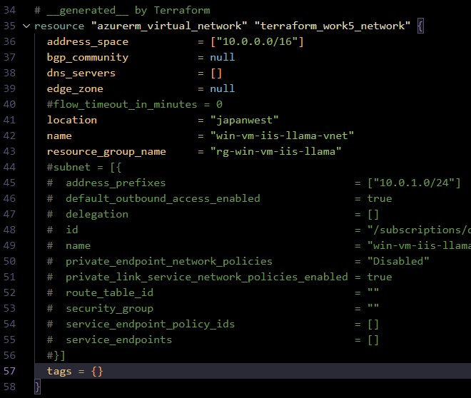
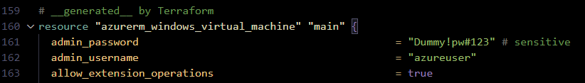
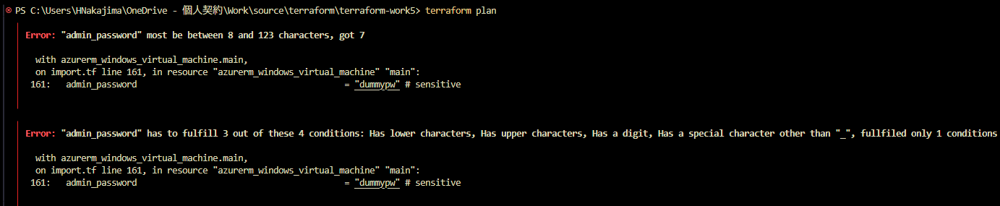
PS C:\Users\HNakajima\OneDrive - 個人契約\Work\source\terraform\terraform-work5> terraform plan
╷
│ Error: "admin_password" most be between 8 and 123 characters, got 7
│
│ with azurerm_windows_virtual_machine.main,
│ on import.tf line 161, in resource "azurerm_windows_virtual_machine" "main":
│ 161: admin_password = "dummypw" # sensitive
│
╵
╷
│ Error: "admin_password" has to fulfill 3 out of these 4 conditions: Has lower characters, Has upper characters, Has a digit, Has a special character other than "_", fullfiled only 1 conditions
│
│ with azurerm_windows_virtual_machine.main,
│ on import.tf line 161, in resource "azurerm_windows_virtual_machine" "main":
│ 161: admin_password = "dummypw" # sensitive
│
╵
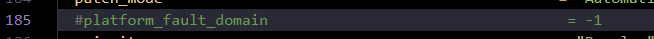
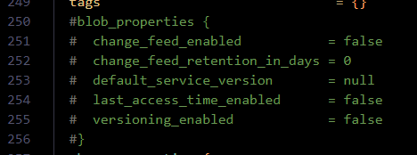
terraform plan で差分を確認する
importblock-main.tf は残しておいた状態で terraform plan する。
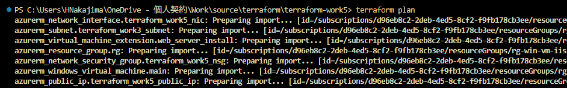
PS C:\Users\HNakajima\OneDrive - 個人契約\Work\source\terraform\terraform-work5> terraform plan
azurerm_network_interface.terraform_work5_nic: Preparing import... [id=/subscriptions/xxxxxxxx-xxxx-xxxx-xxxx-xxxxxxxxxxxx/resourceGroups/rg-win-vm-iis-llama/providers/Microsoft.Network/networkInterfaces/win-vm-iis-llama-nic]
～略～
source_image_reference {
offer = "WindowsServer"
publisher = "MicrosoftWindowsServer"
sku = "2022-datacenter-azure-edition"
version = "latest"
}
}
Plan: 9 to import, 0 to add, 0 to change, 0 to destroy.
────────────────────────────────────────────────────────────────────────────────────────
Note: You didn't use the -out option to save this plan, so Terraform can't guarantee to take exactly these actions if you run "terraform apply" now.
terraform apply を実行し、tfstate ファイルを生成する
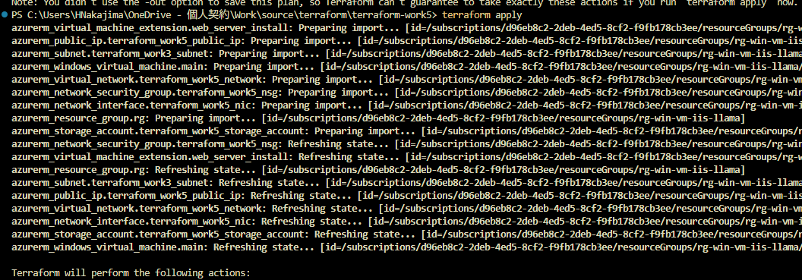
PS C:\Users\HNakajima\OneDrive - 個人契約\Work\source\terraform\terraform-work5> terraform apply
azurerm_virtual_machine_extension.web_server_install: Preparing import... [id=/subscriptions/xxxxxxxx-xxxx-xxxx-xxxx-xxxxxxxxxxxx/resourceGroups/rg-win-vm-iis-llama/providers/Microsoft.Compute/virtualMachines/win-vm-iis-vm/extensions/win-vm-iis-llama-wsi]
azurerm_public_ip.terraform_work5_public_ip: Preparing import... [id=/subscriptions/xxxxxxxx-xxxx-xxxx-xxxx-xxxxxxxxxxxx/resourceGroups/rg-win-vm-iis-llama/providers/Microsoft.Network/publicIPAddresses/win-vm-iis-llama-public-ip]
azurerm_subnet.terraform_work3_subnet: Preparing import... [id=/subscriptions/xxxxxxxx-xxxx-xxxx-xxxx-xxxxxxxxxxxx/resourceGroups/rg-win-vm-iis-llama/providers/Microsoft.Network/virtualNetworks/win-vm-iis-llama-vnet/subnets/win-vm-iis-llama-subnet]
azurerm_windows_virtual_machine.main: Preparing import... [id=/subscriptions/xxxxxxxx-xxxx-xxxx-xxxx-xxxxxxxxxxxx/resourceGroups/rg-win-vm-iis-llama/providers/Microsoft.Compute/virtualMachines/win-vm-iis-vm]
azurerm_virtual_network.terraform_work5_network: Preparing import... [id=/subscriptions/xxxxxxxx-xxxx-xxxx-xxxx-xxxxxxxxxxxx/resourceGroups/rg-win-vm-iis-llama/providers/Microsoft.Network/virtualNetworks/win-vm-iis-llama-vnet]
azurerm_network_security_group.terraform_work5_nsg: Preparing import... [id=/subscriptions/xxxxxxxx-xxxx-xxxx-xxxx-xxxxxxxxxxxx/resourceGroups/rg-win-vm-iis-llama/providers/Microsoft.Network/networkSecurityGroups/win-vm-iis-llama-nsg]
azurerm_network_interface.terraform_work5_nic: Preparing import... [id=/subscriptions/xxxxxxxx-xxxx-xxxx-xxxx-xxxxxxxxxxxx/resourceGroups/rg-win-vm-iis-llama/providers/Microsoft.Network/networkInterfaces/win-vm-iis-llama-nic]
azurerm_resource_group.rg: Preparing import... [id=/subscriptions/xxxxxxxx-xxxx-xxxx-xxxx-xxxxxxxxxxxx/resourceGroups/rg-win-vm-iis-llama]
azurerm_storage_account.terraform_work5_storage_account: Preparing import... [id=/subscriptions/xxxxxxxx-xxxx-xxxx-xxxx-xxxxxxxxxxxx/resourceGroups/rg-win-vm-iis-llama/providers/Microsoft.Storage/storageAccounts/diag3abb2f58b75025ad]
azurerm_network_security_group.terraform_work5_nsg: Refreshing state... [id=/subscriptions/xxxxxxxx-xxxx-xxxx-xxxx-xxxxxxxxxxxx/resourceGroups/rg-win-vm-iis-llama/providers/Microsoft.Network/networkSecurityGroups/win-vm-iis-llama-nsg]
azurerm_virtual_machine_extension.web_server_install: Refreshing state... [id=/subscriptions/xxxxxxxx-xxxx-xxxx-xxxx-xxxxxxxxxxxx/resourceGroups/rg-win-vm-iis-llama/providers/Microsoft.Compute/virtualMachines/win-vm-iis-vm/extensions/win-vm-iis-llama-wsi]
azurerm_resource_group.rg: Refreshing state... [id=/subscriptions/xxxxxxxx-xxxx-xxxx-xxxx-xxxxxxxxxxxx/resourceGroups/rg-win-vm-iis-llama]
azurerm_subnet.terraform_work3_subnet: Refreshing state... [id=/subscriptions/xxxxxxxx-xxxx-xxxx-xxxx-xxxxxxxxxxxx/resourceGroups/rg-win-vm-iis-llama/providers/Microsoft.Network/virtualNetworks/win-vm-iis-llama-vnet/subnets/win-vm-iis-llama-subnet]
azurerm_public_ip.terraform_work5_public_ip: Refreshing state... [id=/subscriptions/xxxxxxxx-xxxx-xxxx-xxxx-xxxxxxxxxxxx/resourceGroups/rg-win-vm-iis-llama/providers/Microsoft.Network/publicIPAddresses/win-vm-iis-llama-public-ip]
azurerm_virtual_network.terraform_work5_network: Refreshing state... [id=/subscriptions/xxxxxxxx-xxxx-xxxx-xxxx-xxxxxxxxxxxx/resourceGroups/rg-win-vm-iis-llama/providers/Microsoft.Network/virtualNetworks/win-vm-iis-llama-vnet]
azurerm_network_interface.terraform_work5_nic: Refreshing state... [id=/subscriptions/xxxxxxxx-xxxx-xxxx-xxxx-xxxxxxxxxxxx/resourceGroups/rg-win-vm-iis-llama/providers/Microsoft.Network/networkInterfaces/win-vm-iis-llama-nic]
azurerm_storage_account.terraform_work5_storage_account: Refreshing state... [id=/subscriptions/xxxxxxxx-xxxx-xxxx-xxxx-xxxxxxxxxxxx/resourceGroups/rg-win-vm-iis-llama/providers/Microsoft.Storage/storageAccounts/diag3abb2f58b75025ad]
azurerm_windows_virtual_machine.main: Refreshing state... [id=/subscriptions/xxxxxxxx-xxxx-xxxx-xxxx-xxxxxxxxxxxx/resourceGroups/rg-win-vm-iis-llama/providers/Microsoft.Compute/virtualMachines/win-vm-iis-vm]
Terraform will perform the following actions:
# azurerm_network_interface.terraform_work5_nic will be imported
～略～
Plan: 9 to import, 0 to add, 0 to change, 0 to destroy.
Do you want to perform these actions?
Terraform will perform the actions described above.
Only 'yes' will be accepted to approve.
Enter a value: yes
azurerm_resource_group.rg: Importing... [id=/subscriptions/xxxxxxxx-xxxx-xxxx-xxxx-xxxxxxxxxxxx/resourceGroups/rg-win-vm-iis-llama]
azurerm_resource_group.rg: Import complete [id=/subscriptions/xxxxxxxx-xxxx-xxxx-xxxx-xxxxxxxxxxxx/resourceGroups/rg-win-vm-iis-llama]
azurerm_public_ip.terraform_work5_public_ip: Importing... [id=/subscriptions/xxxxxxxx-xxxx-xxxx-xxxx-xxxxxxxxxxxx/resourceGroups/rg-win-vm-iis-llama/providers/Microsoft.Network/publicIPAddresses/win-vm-iis-llama-public-ip]
azurerm_public_ip.terraform_work5_public_ip: Import complete [id=/subscriptions/xxxxxxxx-xxxx-xxxx-xxxx-xxxxxxxxxxxx/resourceGroups/rg-win-vm-iis-llama/providers/Microsoft.Network/publicIPAddresses/win-vm-iis-llama-public-ip]
azurerm_subnet.terraform_work3_subnet: Importing... [id=/subscriptions/xxxxxxxx-xxxx-xxxx-xxxx-xxxxxxxxxxxx/resourceGroups/rg-win-vm-iis-llama/providers/Microsoft.Network/virtualNetworks/win-vm-iis-llama-vnet/subnets/win-vm-iis-llama-subnet]
azurerm_subnet.terraform_work3_subnet: Import complete [id=/subscriptions/xxxxxxxx-xxxx-xxxx-xxxx-xxxxxxxxxxxx/resourceGroups/rg-win-vm-iis-llama/providers/Microsoft.Network/virtualNetworks/win-vm-iis-llama-vnet/subnets/win-vm-iis-llama-subnet]
azurerm_network_security_group.terraform_work5_nsg: Importing... [id=/subscriptions/xxxxxxxx-xxxx-xxxx-xxxx-xxxxxxxxxxxx/resourceGroups/rg-win-vm-iis-llama/providers/Microsoft.Network/networkSecurityGroups/win-vm-iis-llama-nsg]
azurerm_network_security_group.terraform_work5_nsg: Import complete [id=/subscriptions/xxxxxxxx-xxxx-xxxx-xxxx-xxxxxxxxxxxx/resourceGroups/rg-win-vm-iis-llama/providers/Microsoft.Network/networkSecurityGroups/win-vm-iis-llama-nsg]
azurerm_virtual_network.terraform_work5_network: Importing... [id=/subscriptions/xxxxxxxx-xxxx-xxxx-xxxx-xxxxxxxxxxxx/resourceGroups/rg-win-vm-iis-llama/providers/Microsoft.Network/virtualNetworks/win-vm-iis-llama-vnet]
azurerm_virtual_network.terraform_work5_network: Import complete [id=/subscriptions/xxxxxxxx-xxxx-xxxx-xxxx-xxxxxxxxxxxx/resourceGroups/rg-win-vm-iis-llama/providers/Microsoft.Network/virtualNetworks/win-vm-iis-llama-vnet]
azurerm_network_interface.terraform_work5_nic: Importing... [id=/subscriptions/xxxxxxxx-xxxx-xxxx-xxxx-xxxxxxxxxxxx/resourceGroups/rg-win-vm-iis-llama/providers/Microsoft.Network/networkInterfaces/win-vm-iis-llama-nic]
azurerm_network_interface.terraform_work5_nic: Import complete [id=/subscriptions/xxxxxxxx-xxxx-xxxx-xxxx-xxxxxxxxxxxx/resourceGroups/rg-win-vm-iis-llama/providers/Microsoft.Network/networkInterfaces/win-vm-iis-llama-nic]
azurerm_virtual_machine_extension.web_server_install: Importing... [id=/subscriptions/xxxxxxxx-xxxx-xxxx-xxxx-xxxxxxxxxxxx/resourceGroups/rg-win-vm-iis-llama/providers/Microsoft.Compute/virtualMachines/win-vm-iis-vm/extensions/win-vm-iis-llama-wsi]
azurerm_virtual_machine_extension.web_server_install: Import complete [id=/subscriptions/xxxxxxxx-xxxx-xxxx-xxxx-xxxxxxxxxxxx/resourceGroups/rg-win-vm-iis-llama/providers/Microsoft.Compute/virtualMachines/win-vm-iis-vm/extensions/win-vm-iis-llama-wsi]
azurerm_windows_virtual_machine.main: Importing... [id=/subscriptions/xxxxxxxx-xxxx-xxxx-xxxx-xxxxxxxxxxxx/resourceGroups/rg-win-vm-iis-llama/providers/Microsoft.Compute/virtualMachines/win-vm-iis-vm]
azurerm_windows_virtual_machine.main: Import complete [id=/subscriptions/xxxxxxxx-xxxx-xxxx-xxxx-xxxxxxxxxxxx/resourceGroups/rg-win-vm-iis-llama/providers/Microsoft.Compute/virtualMachines/win-vm-iis-vm]
azurerm_storage_account.terraform_work5_storage_account: Importing... [id=/subscriptions/xxxxxxxx-xxxx-xxxx-xxxx-xxxxxxxxxxxx/resourceGroups/rg-win-vm-iis-llama/providers/Microsoft.Storage/storageAccounts/diag3abb2f58b75025ad]
azurerm_storage_account.terraform_work5_storage_account: Import complete [id=/subscriptions/xxxxxxxx-xxxx-xxxx-xxxx-xxxxxxxxxxxx/resourceGroups/rg-win-vm-iis-llama/providers/Microsoft.Storage/storageAccounts/diag3abb2f58b75025ad]
Apply complete! Resources: 9 imported, 0 added, 0 changed, 0 destroyed.
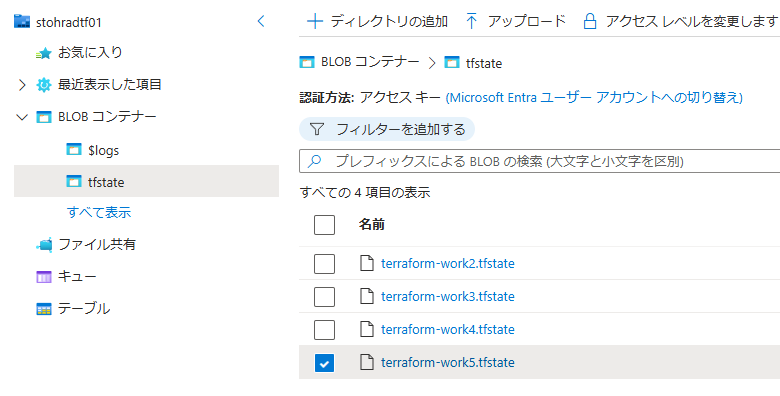
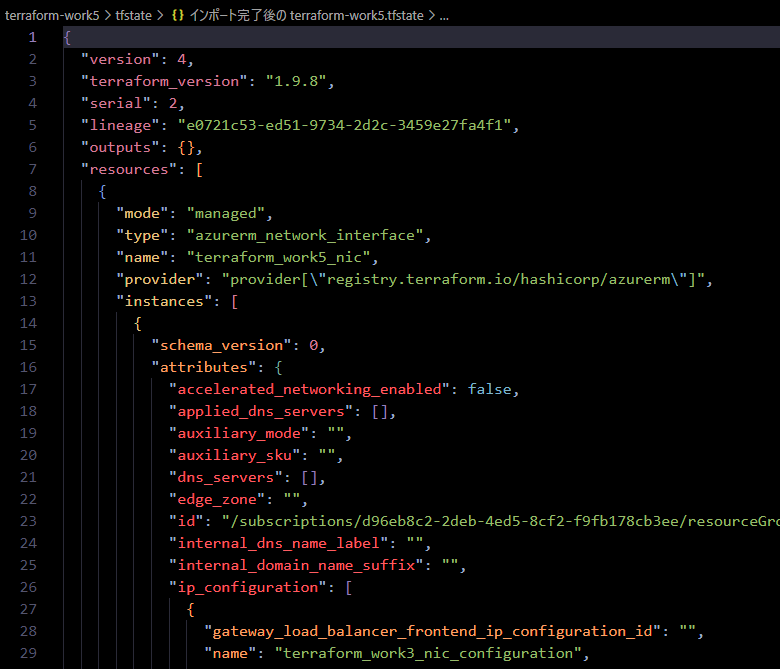
tfstate 生成後、importblock-main.tf は不要なため削除 or リネームする
生成した tf ファイルに Application Gateway を追記し、既存リソースとともに Terraform で管理可能とする
クイックスタート: Azure Application Gateway で Web トラフィックを転送する - Terraform
# ####################################################################
# Application Gateway を追加
# ####################################################################
variable "backend_address_pool_name" {
default = "myBackendPool"
}
variable "frontend_port_name" {
default = "myFrontendPort"
}
variable "frontend_ip_configuration_name" {
default = "myAGIPConfig"
}
variable "http_setting_name" {
default = "myHTTPsetting"
}
variable "listener_name" {
default = "myListener"
}
variable "request_routing_rule_name" {
default = "myRoutingRule"
}
resource "azurerm_subnet" "frontend" {
name = "myAGSubnet"
resource_group_name = azurerm_resource_group.rg.name
virtual_network_name = azurerm_virtual_network.terraform_work5_network.name
address_prefixes = ["10.0.10.0/24"]
}
resource "azurerm_public_ip" "pip" {
name = "myAGPublicIPAddress"
resource_group_name = azurerm_resource_group.rg.name
location = azurerm_resource_group.rg.location
allocation_method = "Static"
sku = "Standard"
}
resource "azurerm_application_gateway" "main" {
name = "myAppGateway"
resource_group_name = azurerm_resource_group.rg.name
location = azurerm_resource_group.rg.location
sku {
name = "Standard_v2"
tier = "Standard_v2"
capacity = 2
}
gateway_ip_configuration {
name = "my-gateway-ip-configuration"
subnet_id = azurerm_subnet.frontend.id
}
frontend_port {
name = var.frontend_port_name
port = 80
}
frontend_ip_configuration {
name = var.frontend_ip_configuration_name
public_ip_address_id = azurerm_public_ip.pip.id
}
backend_address_pool {
name = var.backend_address_pool_name
}
backend_http_settings {
name = var.http_setting_name
cookie_based_affinity = "Disabled"
port = 80
protocol = "Http"
request_timeout = 60
}
http_listener {
name = var.listener_name
frontend_ip_configuration_name = var.frontend_ip_configuration_name
frontend_port_name = var.frontend_port_name
protocol = "Http"
}
request_routing_rule {
name = var.request_routing_rule_name
rule_type = "Basic"
http_listener_name = var.listener_name
backend_address_pool_name = var.backend_address_pool_name
backend_http_settings_name = var.http_setting_name
priority = 1
}
}
resource "azurerm_network_interface_application_gateway_backend_address_pool_association" "nic-assoc" {
network_interface_id = azurerm_network_interface.terraform_work5_nic.id
ip_configuration_name = "terraform_work3_nic_configuration"
backend_address_pool_id = one(azurerm_application_gateway.main.backend_address_pool).id
}
terraform plan / terraform apply する
terraform plan する。PS C:\Users\HNakajima\OneDrive - 個人契約\Work\source\terraform\terraform-work5> terraform plan
azurerm_resource_group.rg: Refreshing state... [id=/subscriptions/xxxxxxxx-xxxx-xxxx-xxxx-xxxxxxxxxxxx/resourceGroups/rg-win-vm-iis-llama]
azurerm_virtual_machine_extension.web_server_install: Refreshing state... [id=/subscriptions/xxxxxxxx-xxxx-xxxx-xxxx-xxxxxxxxxxxx/resourceGroups/rg-win-vm-iis-llama/providers/Microsoft.Compute/virtualMachines/win-vm-iis-vm/extensions/win-vm-iis-llama-wsi]
azurerm_subnet.terraform_work3_subnet: Refreshing state... [id=/subscriptions/xxxxxxxx-xxxx-xxxx-xxxx-xxxxxxxxxxxx/resourceGroups/rg-win-vm-iis-llama/providers/Microsoft.Network/virtualNetworks/win-vm-iis-llama-vnet/subnets/win-vm-iis-llama-subnet]
azurerm_public_ip.terraform_work5_public_ip: Refreshing state... [id=/subscriptions/xxxxxxxx-xxxx-xxxx-xxxx-xxxxxxxxxxxx/resourceGroups/rg-win-vm-iis-llama/providers/Microsoft.Network/publicIPAddresses/win-vm-iis-llama-public-ip]
azurerm_network_interface.terraform_work5_nic: Refreshing state... [id=/subscriptions/xxxxxxxx-xxxx-xxxx-xxxx-xxxxxxxxxxxx/resourceGroups/rg-win-vm-iis-llama/providers/Microsoft.Network/networkInterfaces/win-vm-iis-llama-nic]
azurerm_virtual_network.terraform_work5_network: Refreshing state... [id=/subscriptions/xxxxxxxx-xxxx-xxxx-xxxx-xxxxxxxxxxxx/resourceGroups/rg-win-vm-iis-llama/providers/Microsoft.Network/virtualNetworks/win-vm-iis-llama-vnet]
azurerm_network_security_group.terraform_work5_nsg: Refreshing state... [id=/subscriptions/xxxxxxxx-xxxx-xxxx-xxxx-xxxxxxxxxxxx/resourceGroups/rg-win-vm-iis-llama/providers/Microsoft.Network/networkSecurityGroups/win-vm-iis-llama-nsg]
azurerm_windows_virtual_machine.main: Refreshing state... [id=/subscriptions/xxxxxxxx-xxxx-xxxx-xxxx-xxxxxxxxxxxx/resourceGroups/rg-win-vm-iis-llama/providers/Microsoft.Compute/virtualMachines/win-vm-iis-vm]
azurerm_storage_account.terraform_work5_storage_account: Refreshing state... [id=/subscriptions/xxxxxxxx-xxxx-xxxx-xxxx-xxxxxxxxxxxx/resourceGroups/rg-win-vm-iis-llama/providers/Microsoft.Storage/storageAccounts/diag3abb2f58b75025ad]
Terraform used the selected providers to generate the following execution plan. Resource actions are indicated with the following symbols:
+ create
Terraform will perform the following actions:
# azurerm_application_gateway.main will be created
+ resource "azurerm_application_gateway" "main" {
+ id = (known after apply)
+ location = "japanwest"
+ name = "myAppGateway"
+ private_endpoint_connection = (known after apply)
+ resource_group_name = "rg-win-vm-iis-llama"
+ backend_address_pool {
+ fqdns = []
+ id = (known after apply)
+ ip_addresses = []
+ name = "myBackendPool"
}
+ backend_http_settings {
+ cookie_based_affinity = "Disabled"
+ id = (known after apply)
+ name = "myHTTPsetting"
+ pick_host_name_from_backend_address = false
+ port = 80
+ probe_id = (known after apply)
+ protocol = "Http"
+ request_timeout = 60
+ trusted_root_certificate_names = []
# (4 unchanged attributes hidden)
}
+ frontend_ip_configuration {
+ id = (known after apply)
+ name = "myAGIPConfig"
+ private_ip_address = (known after apply)
+ private_ip_address_allocation = "Dynamic"
+ private_link_configuration_id = (known after apply)
+ public_ip_address_id = (known after apply)
}
+ frontend_port {
+ id = (known after apply)
+ name = "myFrontendPort"
+ port = 80
}
+ gateway_ip_configuration {
+ id = (known after apply)
+ name = "my-gateway-ip-configuration"
+ subnet_id = (known after apply)
}
+ http_listener {
+ frontend_ip_configuration_id = (known after apply)
+ frontend_ip_configuration_name = "myAGIPConfig"
+ frontend_port_id = (known after apply)
+ frontend_port_name = "myFrontendPort"
+ host_names = []
+ id = (known after apply)
+ name = "myListener"
+ protocol = "Http"
+ ssl_certificate_id = (known after apply)
+ ssl_profile_id = (known after apply)
# (4 unchanged attributes hidden)
}
+ request_routing_rule {
+ backend_address_pool_id = (known after apply)
+ backend_address_pool_name = "myBackendPool"
+ backend_http_settings_id = (known after apply)
+ backend_http_settings_name = "myHTTPsetting"
+ http_listener_id = (known after apply)
+ http_listener_name = "myListener"
+ id = (known after apply)
+ name = "myRoutingRule"
+ priority = 1
+ redirect_configuration_id = (known after apply)
+ rewrite_rule_set_id = (known after apply)
+ rule_type = "Basic"
+ url_path_map_id = (known after apply)
# (3 unchanged attributes hidden)
}
+ sku {
+ capacity = 2
+ name = "Standard_v2"
+ tier = "Standard_v2"
}
+ ssl_policy (known after apply)
}
# azurerm_network_interface_application_gateway_backend_address_pool_association.nic-assoc will be created
+ resource "azurerm_network_interface_application_gateway_backend_address_pool_association" "nic-assoc" {
+ backend_address_pool_id = (known after apply)
+ id = (known after apply)
+ ip_configuration_name = "terraform_work3_nic_configuration"
+ network_interface_id = "/subscriptions/xxxxxxxx-xxxx-xxxx-xxxx-xxxxxxxxxxxx/resourceGroups/rg-win-vm-iis-llama/providers/Microsoft.Network/networkInterfaces/win-vm-iis-llama-nic"
}
# azurerm_public_ip.pip will be created
+ resource "azurerm_public_ip" "pip" {
+ allocation_method = "Static"
+ ddos_protection_mode = "VirtualNetworkInherited"
+ fqdn = (known after apply)
+ id = (known after apply)
+ idle_timeout_in_minutes = 4
+ ip_address = (known after apply)
+ ip_version = "IPv4"
+ location = "japanwest"
+ name = "myAGPublicIPAddress"
+ resource_group_name = "rg-win-vm-iis-llama"
+ sku = "Standard"
+ sku_tier = "Regional"
}
# azurerm_subnet.frontend will be created
+ resource "azurerm_subnet" "frontend" {
+ address_prefixes = [
+ "10.0.10.0/24",
]
+ default_outbound_access_enabled = true
+ id = (known after apply)
+ name = "myAGSubnet"
+ private_endpoint_network_policies = "Disabled"
+ private_link_service_network_policies_enabled = true
+ resource_group_name = "rg-win-vm-iis-llama"
+ virtual_network_name = "win-vm-iis-llama-vnet"
}
Plan: 4 to add, 0 to change, 0 to destroy.
─────────────────────────────────────────────────────────────────────────────────
Note: You didn't use the -out option to save this plan, so Terraform can't guarantee to take exactly these actions if you run "terraform apply" now.
terraform apply する。
PS C:\Users\HNakajima\OneDrive - 個人契約\Work\source\terraform\terraform-work5> terraform apply
azurerm_subnet.terraform_work3_subnet: Refreshing state... [id=/subscriptions/xxxxxxxx-xxxx-xxxx-xxxx-xxxxxxxxxxxx/resourceGroups/rg-win-vm-iis-llama/providers/Microsoft.Network/virtualNetworks/win-vm-iis-llama-vnet/subnets/win-vm-iis-llama-subnet]
azurerm_network_interface.terraform_work5_nic: Refreshing state... [id=/subscriptions/xxxxxxxx-xxxx-xxxx-xxxx-xxxxxxxxxxxx/resourceGroups/rg-win-vm-iis-llama/providers/Microsoft.Network/networkInterfaces/win-vm-iis-llama-nic]
azurerm_public_ip.terraform_work5_public_ip: Refreshing state... [id=/subscriptions/xxxxxxxx-xxxx-xxxx-xxxx-xxxxxxxxxxxx/resourceGroups/rg-win-vm-iis-llama/providers/Microsoft.Network/publicIPAddresses/win-vm-iis-llama-public-ip]
azurerm_resource_group.rg: Refreshing state... [id=/subscriptions/xxxxxxxx-xxxx-xxxx-xxxx-xxxxxxxxxxxx/resourceGroups/rg-win-vm-iis-llama]
azurerm_virtual_machine_extension.web_server_install: Refreshing state... [id=/subscriptions/xxxxxxxx-xxxx-xxxx-xxxx-xxxxxxxxxxxx/resourceGroups/rg-win-vm-iis-llama/providers/Microsoft.Compute/virtualMachines/win-vm-iis-vm/extensions/win-vm-iis-llama-wsi]
azurerm_network_security_group.terraform_work5_nsg: Refreshing state... [id=/subscriptions/xxxxxxxx-xxxx-xxxx-xxxx-xxxxxxxxxxxx/resourceGroups/rg-win-vm-iis-llama/providers/Microsoft.Network/networkSecurityGroups/win-vm-iis-llama-nsg]
azurerm_virtual_network.terraform_work5_network: Refreshing state... [id=/subscriptions/xxxxxxxx-xxxx-xxxx-xxxx-xxxxxxxxxxxx/resourceGroups/rg-win-vm-iis-llama/providers/Microsoft.Network/virtualNetworks/win-vm-iis-llama-vnet]
azurerm_windows_virtual_machine.main: Refreshing state... [id=/subscriptions/xxxxxxxx-xxxx-xxxx-xxxx-xxxxxxxxxxxx/resourceGroups/rg-win-vm-iis-llama/providers/Microsoft.Compute/virtualMachines/win-vm-iis-vm]
azurerm_storage_account.terraform_work5_storage_account: Refreshing state... [id=/subscriptions/xxxxxxxx-xxxx-xxxx-xxxx-xxxxxxxxxxxx/resourceGroups/rg-win-vm-iis-llama/providers/Microsoft.Storage/storageAccounts/diag3abb2f58b75025ad]
azurerm_public_ip.pip: Refreshing state... [id=/subscriptions/xxxxxxxx-xxxx-xxxx-xxxx-xxxxxxxxxxxx/resourceGroups/rg-win-vm-iis-llama/providers/Microsoft.Network/publicIPAddresses/myAGPublicIPAddress]
azurerm_subnet.frontend: Refreshing state... [id=/subscriptions/xxxxxxxx-xxxx-xxxx-xxxx-xxxxxxxxxxxx/resourceGroups/rg-win-vm-iis-llama/providers/Microsoft.Network/virtualNetworks/win-vm-iis-llama-vnet/subnets/myAGSubnet]
azurerm_application_gateway.main: Refreshing state... [id=/subscriptions/xxxxxxxx-xxxx-xxxx-xxxx-xxxxxxxxxxxx/resourceGroups/rg-win-vm-iis-llama/providers/Microsoft.Network/applicationGateways/myAppGateway]
Terraform used the selected providers to generate the following execution plan. Resource actions are indicated with the following symbols:
+ create
Terraform will perform the following actions:
# azurerm_network_interface_application_gateway_backend_address_pool_association.nic-assoc will be created
+ resource "azurerm_network_interface_application_gateway_backend_address_pool_association" "nic-assoc" {
+ backend_address_pool_id = "/subscriptions/xxxxxxxx-xxxx-xxxx-xxxx-xxxxxxxxxxxx/resourceGroups/rg-win-vm-iis-llama/providers/Microsoft.Network/applicationGateways/myAppGateway/backendAddressPools/myBackendPool"
+ id = (known after apply)
+ ip_configuration_name = "terraform_work3_nic_configuration"
+ network_interface_id = "/subscriptions/xxxxxxxx-xxxx-xxxx-xxxx-xxxxxxxxxxxx/resourceGroups/rg-win-vm-iis-llama/providers/Microsoft.Network/networkInterfaces/win-vm-iis-llama-nic"
}
Plan: 1 to add, 0 to change, 0 to destroy.
Do you want to perform these actions?
Terraform will perform the actions described above.
Only 'yes' will be accepted to approve.
Enter a value: yes
azurerm_network_interface_application_gateway_backend_address_pool_association.nic-assoc: Creating...
azurerm_network_interface_application_gateway_backend_address_pool_association.nic-assoc: Still creating... [10s elapsed]
azurerm_network_interface_application_gateway_backend_address_pool_association.nic-assoc: Creation complete after 10s [id=/subscriptions/xxxxxxxx-xxxx-xxxx-xxxx-xxxxxxxxxxxx/resourceGroups/rg-win-vm-iis-llama/providers/Microsoft.Network/networkInterfaces/win-vm-iis-llama-nic/ipConfigu
rations/terraform_work3_nic_configuration|/subscriptions/xxxxxxxx-xxxx-xxxx-xxxx-xxxxxxxxxxxx/resourceGroups/rg-win-vm-iis-llama/providers/Microsoft.Network/applicationGateways/myAppGateway/backendAddressPools/myBackendPool]
Apply complete! Resources: 1 added, 0 changed, 0 destroyed.
リソースが追加された
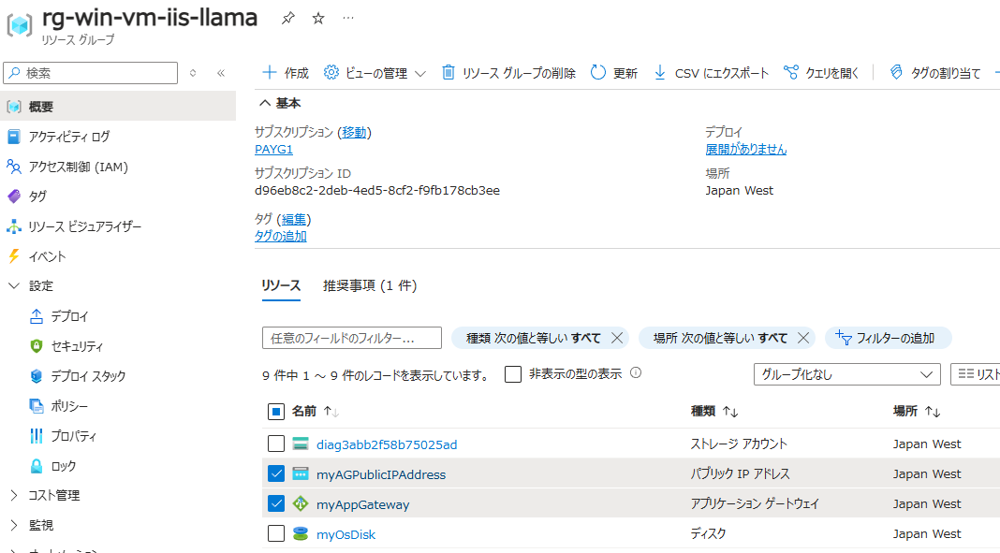
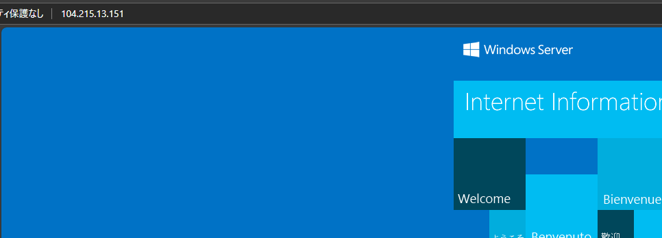
tfstate ファイルも更新されている
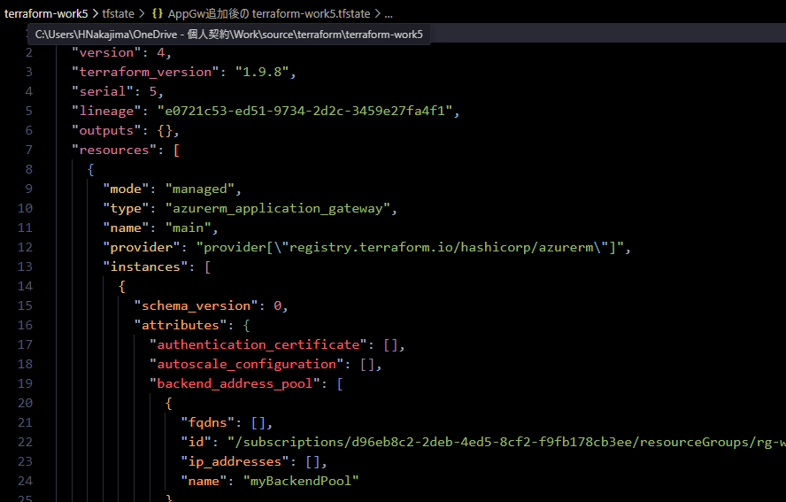
terraform destroy を実行する
PS C:\Users\HNakajima\OneDrive - 個人契約\Work\source\terraform\terraform-work5> terraform destroy
azurerm_subnet.terraform_work3_subnet: Refreshing state... [id=/subscriptions/xxxxxxxx-xxxx-xxxx-xxxx-xxxxxxxxxxxx/resourceGroups/rg-win-vm-iis-llama/providers/Microsoft.Network/virtualNetworks/win-vm-iis-llama-vnet/subnets/win-vm-iis-llama-subnet]
azurerm_public_ip.terraform_work5_public_ip: Refreshing state... [id=/subscriptions/xxxxxxxx-xxxx-xxxx-xxxx-xxxxxxxxxxxx/resourceGroups/rg-win-vm-iis-llama/providers/Microsoft.Network/publicIPAddresses/win-vm-iis-llama-public-ip]
azurerm_virtual_machine_extension.web_server_install: Refreshing state... [id=/subscriptions/xxxxxxxx-xxxx-xxxx-xxxx-xxxxxxxxxxxx/resourceGroups/rg-win-vm-iis-llama/providers/Microsoft.Compute/virtualMachines/win-vm-iis-vm/extensions/win-vm-iis-llama-wsi]
azurerm_resource_group.rg: Refreshing state... [id=/subscriptions/xxxxxxxx-xxxx-xxxx-xxxx-xxxxxxxxxxxx/resourceGroups/rg-win-vm-iis-llama]
azurerm_network_interface.terraform_work5_nic: Refreshing state... [id=/subscriptions/xxxxxxxx-xxxx-xxxx-xxxx-xxxxxxxxxxxx/resourceGroups/rg-win-vm-iis-llama/providers/Microsoft.Network/networkInterfaces/win-vm-iis-llama-nic]
azurerm_virtual_network.terraform_work5_network: Refreshing state... [id=/subscriptions/xxxxxxxx-xxxx-xxxx-xxxx-xxxxxxxxxxxx/resourceGroups/rg-win-vm-iis-llama/providers/Microsoft.Network/virtualNetworks/win-vm-iis-llama-vnet]
azurerm_network_security_group.terraform_work5_nsg: Refreshing state... [id=/subscriptions/xxxxxxxx-xxxx-xxxx-xxxx-xxxxxxxxxxxx/resourceGroups/rg-win-vm-iis-llama/providers/Microsoft.Network/networkSecurityGroups/win-vm-iis-llama-nsg]
azurerm_windows_virtual_machine.main: Refreshing state... [id=/subscriptions/xxxxxxxx-xxxx-xxxx-xxxx-xxxxxxxxxxxx/resourceGroups/rg-win-vm-iis-llama/providers/Microsoft.Compute/virtualMachines/win-vm-iis-vm]
azurerm_storage_account.terraform_work5_storage_account: Refreshing state... [id=/subscriptions/xxxxxxxx-xxxx-xxxx-xxxx-xxxxxxxxxxxx/resourceGroups/rg-win-vm-iis-llama/providers/Microsoft.Storage/storageAccounts/diag3abb2f58b75025ad]
azurerm_public_ip.pip: Refreshing state... [id=/subscriptions/xxxxxxxx-xxxx-xxxx-xxxx-xxxxxxxxxxxx/resourceGroups/rg-win-vm-iis-llama/providers/Microsoft.Network/publicIPAddresses/myAGPublicIPAddress]
azurerm_subnet.frontend: Refreshing state... [id=/subscriptions/xxxxxxxx-xxxx-xxxx-xxxx-xxxxxxxxxxxx/resourceGroups/rg-win-vm-iis-llama/providers/Microsoft.Network/virtualNetworks/win-vm-iis-llama-vnet/subnets/myAGSubnet]
azurerm_application_gateway.main: Refreshing state... [id=/subscriptions/xxxxxxxx-xxxx-xxxx-xxxx-xxxxxxxxxxxx/resourceGroups/rg-win-vm-iis-llama/providers/Microsoft.Network/applicationGateways/myAppGateway]
azurerm_network_interface_application_gateway_backend_address_pool_association.nic-assoc: Refreshing state... [id=/subscriptions/xxxxxxxx-xxxx-xxxx-xxxx-xxxxxxxxxxxx/resourceGroups/rg-win-vm-iis-llama/providers/Microsoft.Network/networkInterfaces/win-vm-iis-llama-nic/ipConfigurations/
terraform_work3_nic_configuration|/subscriptions/xxxxxxxx-xxxx-xxxx-xxxx-xxxxxxxxxxxx/resourceGroups/rg-win-vm-iis-llama/providers/Microsoft.Network/applicationGateways/myAppGateway/backendAddressPools/myBackendPool]
Terraform used the selected providers to generate the following execution plan. Resource actions are indicated with the following symbols:
- destroy
Terraform will perform the following actions:
# azurerm_application_gateway.main will be destroyed
- resource "azurerm_application_gateway" "main" {
- enable_http2 = false -> null
- fips_enabled = false -> null
～略～
azurerm_resource_group.rg: Still destroying... [id=/subscriptions/xxxxxxxx-xxxx-4ed5-8cf2-...3ee/resourceGroups/rg-win-vm-iis-llama, 8m40s elapsed]
azurerm_resource_group.rg: Still destroying... [id=/subscriptions/xxxxxxxx-xxxx-4ed5-8cf2-...3ee/resourceGroups/rg-win-vm-iis-llama, 8m50s elapsed]
azurerm_resource_group.rg: Still destroying... [id=/subscriptions/xxxxxxxx-xxxx-4ed5-8cf2-...3ee/resourceGroups/rg-win-vm-iis-llama, 9m0s elapsed]
azurerm_resource_group.rg: Still destroying... [id=/subscriptions/xxxxxxxx-xxxx-4ed5-8cf2-...3ee/resourceGroups/rg-win-vm-iis-llama, 9m10s elapsed]
azurerm_resource_group.rg: Still destroying... [id=/subscriptions/xxxxxxxx-xxxx-4ed5-8cf2-...3ee/resourceGroups/rg-win-vm-iis-llama, 9m20s elapsed]
azurerm_resource_group.rg: Still destroying... [id=/subscriptions/xxxxxxxx-xxxx-4ed5-8cf2-...3ee/resourceGroups/rg-win-vm-iis-llama, 9m30s elapsed]
azurerm_resource_group.rg: Still destroying... [id=/subscriptions/xxxxxxxx-xxxx-4ed5-8cf2-...3ee/resourceGroups/rg-win-vm-iis-llama, 9m40s elapsed]
azurerm_resource_group.rg: Still destroying... [id=/subscriptions/xxxxxxxx-xxxx-4ed5-8cf2-...3ee/resourceGroups/rg-win-vm-iis-llama, 9m50s elapsed]
╷
│ Error: deleting Subnet (Subscription: "xxxxxxxx-xxxx-xxxx-xxxx-xxxxxxxxxxxx"
│ Resource Group Name: "rg-win-vm-iis-llama"
│ Virtual Network Name: "win-vm-iis-llama-vnet"
│ Subnet Name: "win-vm-iis-llama-subnet"): performing Delete: unexpected status 400 (400 Bad Request) with error: InUseSubnetCannotBeDeleted: Subnet win-vm-iis-llama-subnet is in use by /subscriptions/xxxxxxxx-xxxx-xxxx-xxxx-xxxxxxxxxxxx/resourceGroups/RG-WIN-VM-IIS-LLAMA/providers/Mi
crosoft.Network/networkInterfaces/WIN-VM-IIS-LLAMA-NIC/ipConfigurations/TERRAFORM_WORK3_NIC_CONFIGURATION and cannot be deleted. In order to delete the subnet, delete all the resources within the subnet. See aka.ms/deletesubnet. │
│
╵
╷
│ Error: deleting Network Security Group (Subscription: "xxxxxxxx-xxxx-xxxx-xxxx-xxxxxxxxxxxx"
│ Resource Group Name: "rg-win-vm-iis-llama"
│ Network Security Group Name: "win-vm-iis-llama-nsg"): performing Delete: unexpected status 400 (400 Bad Request) with error: InUseNetworkSecurityGroupCannotBeDeleted: Network security group /subscriptions/xxxxxxxx-xxxx-xxxx-xxxx-xxxxxxxxxxxx/resourceGroups/rg-win-vm-iis-llama/provid
ers/Microsoft.Network/networkSecurityGroups/win-vm-iis-llama-nsg cannot be deleted because it is in use by the following resources: /subscriptions/xxxxxxxx-xxxx-xxxx-xxxx-xxxxxxxxxxxx/resourceGroups/rg-win-vm-iis-llama/providers/Microsoft.Network/networkInterfaces/win-vm-iis-llama-nic. In order to delete the Network security group, remove the association with the resource(s). To learn how to do this, see aka.ms/deletensg. │
│
╵
╷
│ Error: deleting Resource Group "rg-win-vm-iis-llama": the Resource Group still contains Resources.
│
│ Terraform is configured to check for Resources within the Resource Group when deleting the Resource Group - and
│ raise an error if nested Resources still exist to avoid unintentionally deleting these Resources.
│
│ Terraform has detected that the following Resources still exist within the Resource Group:
│
│ * `/subscriptions/xxxxxxxx-xxxx-xxxx-xxxx-xxxxxxxxxxxx/resourceGroups/rg-win-vm-iis-llama/providers/Microsoft.Network/networkSecurityGroups/win-vm-iis-llama-nsg`
│ * `/subscriptions/xxxxxxxx-xxxx-xxxx-xxxx-xxxxxxxxxxxx/resourceGroups/rg-win-vm-iis-llama/providers/Microsoft.Network/publicIPAddresses/win-vm-iis-llama-public-ip`
│
│ This feature is intended to avoid the unintentional destruction of nested Resources provisioned through some
│ other means (for example, an ARM Template Deployment) - as such you must either remove these Resources, or
│ disable this behaviour using the feature flag `prevent_deletion_if_contains_resources` within the `features`
│ block when configuring the Provider, for example:
│
│ provider "azurerm" {
│ features {
│ resource_group {
│ prevent_deletion_if_contains_resources = false
│ }
│ }
│ }
│
│ When that feature flag is set, Terraform will skip checking for any Resources within the Resource Group and
│ delete this using the Azure API directly (which will clear up any nested resources).
│
│ More information on the `features` block can be found in the documentation:
│ https://registry.terraform.io/providers/hashicorp/azurerm/latest/docs/guides/features-block
│
│
│
╵
╷
│ Error: deleting Extension (Subscription: "xxxxxxxx-xxxx-xxxx-xxxx-xxxxxxxxxxxx"
│ Resource Group Name: "rg-win-vm-iis-llama"
│ Virtual Machine Name: "win-vm-iis-vm"
│ Extension Name: "win-vm-iis-llama-wsi"): performing Delete: unexpected status 409 (409 Conflict) with error: OperationNotAllowed: Cannot modify extensions in the VM when the VM is not running.
│
│
╵
╷
│ Error: deleting Public I P Address (Subscription: "xxxxxxxx-xxxx-xxxx-xxxx-xxxxxxxxxxxx"
│ Resource Group Name: "rg-win-vm-iis-llama"
│ Public I P Addresses Name: "win-vm-iis-llama-public-ip"): performing Delete: unexpected status 400 (400 Bad Request) with error: PublicIPAddressCannotBeDeleted: Public IP address /subscriptions/xxxxxxxx-xxxx-xxxx-xxxx-xxxxxxxxxxxx/resourceGroups/rg-win-vm-iis-llama/providers/Microso
ft.Network/publicIPAddresses/win-vm-iis-llama-public-ip can not be deleted since it is still allocated to resource /subscriptions/xxxxxxxx-xxxx-xxxx-xxxx-xxxxxxxxxxxx/resourceGroups/rg-win-vm-iis-llama/providers/Microsoft.Network/networkInterfaces/win-vm-iis-llama-nic/ipConfigurations/terraform_work3_nic_configuration. In order to delete the public IP, disassociate/detach the Public IP address from the resource. To learn how to do this, see aka.ms/deletepublicip. │
│
╵
Releasing state lock. This may take a few moments...
terraform destroy するとリソースグループ含め削除された。PS C:\Users\HNakajima\OneDrive - 個人契約\Work\source\terraform\terraform-work5> terraform destroy
azurerm_resource_group.rg: Refreshing state... [id=/subscriptions/xxxxxxxx-xxxx-xxxx-xxxx-xxxxxxxxxxxx/resourceGroups/rg-win-vm-iis-llama]
azurerm_subnet.terraform_work3_subnet: Refreshing state... [id=/subscriptions/xxxxxxxx-xxxx-xxxx-xxxx-xxxxxxxxxxxx/resourceGroups/rg-win-vm-iis-llama/providers/Microsoft.Network/virtualNetworks/win-vm-iis-llama-vnet/subnets/win-vm-iis-llama-subnet]
azurerm_virtual_machine_extension.web_server_install: Refreshing state... [id=/subscriptions/xxxxxxxx-xxxx-xxxx-xxxx-xxxxxxxxxxxx/resourceGroups/rg-win-vm-iis-llama/providers/Microsoft.Compute/virtualMachines/win-vm-iis-vm/extensions/win-vm-iis-llama-wsi]
azurerm_public_ip.terraform_work5_public_ip: Refreshing state... [id=/subscriptions/xxxxxxxx-xxxx-xxxx-xxxx-xxxxxxxxxxxx/resourceGroups/rg-win-vm-iis-llama/providers/Microsoft.Network/publicIPAddresses/win-vm-iis-llama-public-ip]
azurerm_network_security_group.terraform_work5_nsg: Refreshing state... [id=/subscriptions/xxxxxxxx-xxxx-xxxx-xxxx-xxxxxxxxxxxx/resourceGroups/rg-win-vm-iis-llama/providers/Microsoft.Network/networkSecurityGroups/win-vm-iis-llama-nsg]
Terraform used the selected providers to generate the following execution plan. Resource actions are indicated with the following symbols:
- destroy
Terraform will perform the following actions:
# azurerm_network_security_group.terraform_work5_nsg will be destroyed
- resource "azurerm_network_security_group" "terraform_work5_nsg" {
- id = "/subscriptions/xxxxxxxx-xxxx-xxxx-xxxx-xxxxxxxxxxxx/resourceGroups/rg-win-vm-iis-llama/providers/Microsoft.Network/networkSecurityGroups/win-vm-iis-llama-nsg" -> null
- location = "japanwest" -> null
- name = "win-vm-iis-llama-nsg" -> null
～略～
Plan: 0 to add, 0 to change, 3 to destroy.
Do you really want to destroy all resources?
Terraform will destroy all your managed infrastructure, as shown above.
There is no undo. Only 'yes' will be accepted to confirm.
Enter a value: yes
azurerm_resource_group.rg: Destroying... [id=/subscriptions/xxxxxxxx-xxxx-xxxx-xxxx-xxxxxxxxxxxx/resourceGroups/rg-win-vm-iis-llama]
azurerm_public_ip.terraform_work5_public_ip: Destroying... [id=/subscriptions/xxxxxxxx-xxxx-xxxx-xxxx-xxxxxxxxxxxx/resourceGroups/rg-win-vm-iis-llama/providers/Microsoft.Network/publicIPAddresses/win-vm-iis-llama-public-ip]
azurerm_network_security_group.terraform_work5_nsg: Destroying... [id=/subscriptions/xxxxxxxx-xxxx-xxxx-xxxx-xxxxxxxxxxxx/resourceGroups/rg-win-vm-iis-llama/providers/Microsoft.Network/networkSecurityGroups/win-vm-iis-llama-nsg]
azurerm_network_security_group.terraform_work5_nsg: Still destroying... [id=/subscriptions/xxxxxxxx-xxxx-4ed5-8cf2-...orkSecurityGroups/win-vm-iis-llama-nsg, 10s elapsed]
azurerm_public_ip.terraform_work5_public_ip: Still destroying... [id=/subscriptions/xxxxxxxx-xxxx-4ed5-8cf2-...IPAddresses/win-vm-iis-llama-public-ip, 10s elapsed]
azurerm_resource_group.rg: Still destroying... [id=/subscriptions/xxxxxxxx-xxxx-4ed5-8cf2-...3ee/resourceGroups/rg-win-vm-iis-llama, 10s elapsed]
azurerm_network_security_group.terraform_work5_nsg: Destruction complete after 11s
azurerm_public_ip.terraform_work5_public_ip: Destruction complete after 12s
azurerm_resource_group.rg: Still destroying... [id=/subscriptions/xxxxxxxx-xxxx-4ed5-8cf2-...3ee/resourceGroups/rg-win-vm-iis-llama, 20s elapsed]
azurerm_resource_group.rg: Still destroying... [id=/subscriptions/xxxxxxxx-xxxx-4ed5-8cf2-...3ee/resourceGroups/rg-win-vm-iis-llama, 30s elapsed]
azurerm_resource_group.rg: Still destroying... [id=/subscriptions/xxxxxxxx-xxxx-4ed5-8cf2-...3ee/resourceGroups/rg-win-vm-iis-llama, 40s elapsed]
azurerm_resource_group.rg: Still destroying... [id=/subscriptions/xxxxxxxx-xxxx-4ed5-8cf2-...3ee/resourceGroups/rg-win-vm-iis-llama, 50s elapsed]
azurerm_resource_group.rg: Destruction complete after 50s
Destroy complete! Resources: 3 destroyed.